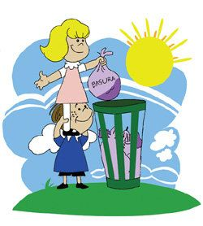
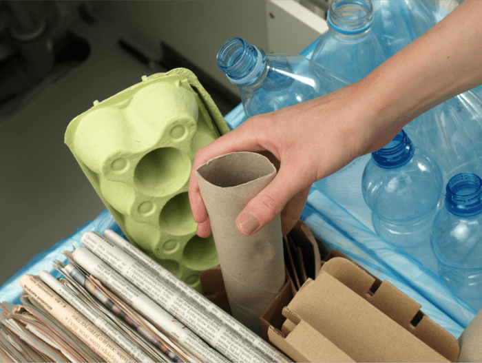

CUIDADOS QUE DEBEMOS TENER
CUIDAR EL AGUA Las tres cuartas partes de la superficie de la Tierra están cubiertas de agua, pero de ésta gran cantidad apenas el 2.5% es apta para el consumo humano. Al ser tan importante para la vida en nuestro planeta es necesario que aprendamos a cuidarla y racionarla. Si eres de los afortunados que tienen acceso al agua potable puedes tomar acciones simples desde tu casa y lugar de trabajo que harán una diferencia real en favor de nuestro planeta. Aquí te dejo algunos tips fáciles de aplicar en nuestro día a día:
|
NO BOTAR BASURA Caminas por la calle y ves que a la persona de delante se le cae un papel al suelo. Al principio piensas que es algo importante y que deberías devolvérselo, pero te fijas mejor y compruebas que no es más que un ticket de la compra arrugado, hecho una bola. Lo ha tirado a propósito. Afortunadamente, ésta es una actitud cada vez menos habitual, gracias en parte a las campañas de concienciación sobre la importancia de no tirar basura al suelo y mantener las ciudades limpias. Sin embargo, a juzgar por el aspecto de algunas urbes, cuyos suelos están en muchos casos repletos de colillas, vemos que todavía queda mucho por hacer. Los restos de cigarrillos constituyen la primera fuente de basura mundial, por delante de los envases de alimentos, botellas y bolsas de plástico, según determinó un especialista de la Sociedad Española de Neumología y Cirugía Torácica (SEPAR). Del total de residuos que se recogen a nivel mundial, las colillas representan el 30 %, aduce esta organización. Además las colillas pueden tardar en descomponerse entre ocho y doce años, según el SEPAR, perdiendo un 37,8 % de su masa inicial tras dos años de degradación, precisan. Este residuo se impone al resto como el más frecuente entre los vertidos al medio ambiente tanto en entornos naturales como urbanos. Tirar basuraTirar basura (restos de colillas, plásticos, papeles, etc.) al medio natural terrestre repercute además sobre los ecosistemas marinos. De hecho, el 80 % de las basuras marinas lo constituyen los residuos abandonados en tierra. . Portada » No tirar basura en el medio ambiente No tirar basura en el medio ambiente No tirar basura en el medio ambiente POSTED AT H IN MEDIO AMBIENTE BY ECV 0 COMMENTS Contenido Residuos terrestres en el mar ¿Qué hacer para evitar abandonar basura? Caminas por la calle y ves que a la persona de delante se le cae un papel al suelo. Al principio piensas que es algo importante y que deberías devolvérselo, pero te fijas mejor y compruebas que no es más que un ticket de la compra arrugado, hecho una bola. Lo ha tirado a propósito. Afortunadamente, ésta es una actitud cada vez menos habitual, gracias en parte a las campañas de concienciación sobre la importancia de no tirar basura al suelo y mantener las ciudades limpias. Sin embargo, a juzgar por el aspecto de algunas urbes, cuyos suelos están en muchos casos repletos de colillas, vemos que todavía queda mucho por hacer. Los restos de cigarrillos constituyen la primera fuente de basura mundial, por delante de los envases de alimentos, botellas y bolsas de plástico, según determinó un especialista de la Sociedad Española de Neumología y Cirugía Torácica (SEPAR).  |
RECICLAR Cómo separar la basura Principalmente la basura la podemos dividir en Orgánica e Inorgánica. La Orgánica es aquella que se descompone y proviene de un ser vivo. La basura inorgánica proviene de materiales hechos por el hombre tales como plásticos, vidrios o metales. Una vez clasificada, veamos como debemos separarla para su reciclaje: Basura orgánica La basura orgánica son restos de comida y cualquier desecho de plantas o animales. ¿Sabías que al menos el 40% de los desechos que echas al cubo de la basura a diario es materia orgánica? La basura orgánica es biodegradable y se puede utilizar como abono orgánico. La forma más conocida de reciclar la basura orgánica es mediante compost. Metal Latas de conserva y otro tipo de metales constituyen un recurso no renovable. Este tipo de materiales tienen una recuperación muy rentable. Por ejemplo, con la energía necesaria para fabricar una lata de refresco, se podría tener una televisión encendida durante dos horas. Puedes reciclar el metal en puntos de reciclaje de tu ciudad. Papel y cartón Debemos reciclar cuadernos viejos y todo el papel que podamos. Del mismo modo, debemos utilizar el papel que ya este reciclado, de esta manera evitaremos talas excesivas. Plástico Imprescindible la recuperación del plástico ya que es un material no biodegradable. Jamás debemos tirarlo fuera de su circuito de reciclaje. Vidrio Lo mejor es depositar las botellas o botes de vidrio en los contenedores habilitados para tal uso en las ciudades. De esta forma se logra cerrar el círculo y producir una botella de la que se tira. Tetrabrick Debemos prestar especial atención a este tipo de envases, ya que están fabricado con un 75% de cartón, un 20% de plástico y un 5% de aluminio. Se tiene que reciclar en sitios especializados y no se pueden reutilizar. Pilas y baterías Por último, hacer una mención especial a los materiales contaminantes como las pilas y los fluorescentes.Contenedores de reciclaje Una vez separada correctamente la basura, hay que saber en qué contenedor echar cada cosa. En los contenedores verdes tiraríamos los materiales hechos con vidrio, como botellas, botes de perfume o frascos de conservas. A los contenedores azules irían el papel y el cartón, teniendo mucho cuidado de no meter aquí los tetrabriks, lo que suele ser un error muy común. En los contenedores amarillos, en cambio, sí que debemos echar los briks, así como envases metálicos, envases de plástico y bolsas y envoltorios de plástico y aluminio. La basura orgánica debería ir en un contenedor aparte que suele ser de color naranja. Si queréis más detalles sobre qué cosas deben ir a cada contenedor, pinchad en este enlace.  |
|---|